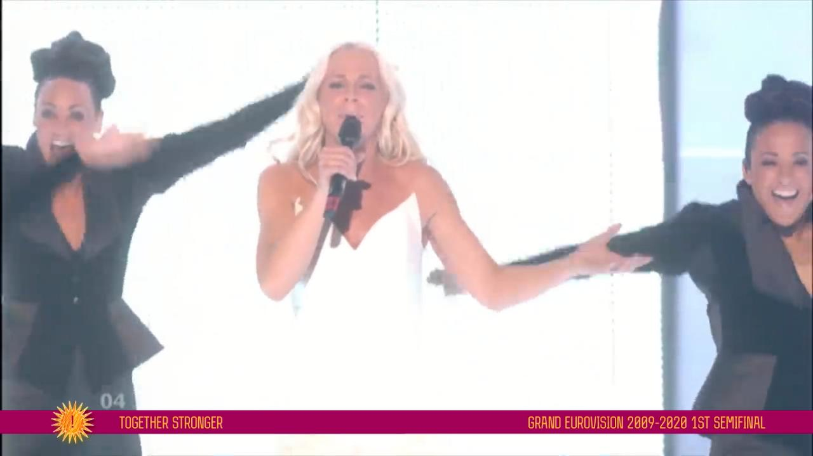

After photos of Malena Ernmann were leaked from a rehearsal of the first Semi Final, KCS confirms that she will return to KJurovision as an interval act performer.

Nadav Guedj To Be The First Confirmed Interval Act
Today after the 2014 voting, it was announced by Kostia Creative Studios, broadcaster responsible for Big Eurovision Final, that Nadav Guedj would return on the Eurovision stage as an interval act participant. However, it was not announced on which of the four shows he will appear - it is still secret information. One thing is that Golden Boy will definitely show us Tel Aviv!To remind yourself of the entrance, see video below:
Concept and Dates of Big Eurovision Final Revealed
We are presenting the concept of the Big Final of Eurovision. It is to be held on May 1-3 and 9.